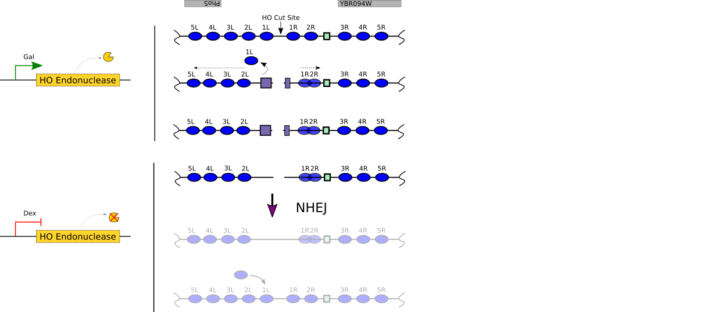

Mechanisms of genetic and epigenetic inheritance
Department of Pharmacology and Cancer Biology
Duke University School of Medicine
Duke 2020
It has not escaped our notice that the specific pairing we have postulated immediately suggests a possible copying mechanism for the genetic material.
Genetic inheritance
Epigenetic inheritance
Vinay's break


Vinay Tripuraneni
Vinay's DSB

Vinay Tripuraneni, PHARM MSTP
Introduction of a site-specific break at PHO5
Introduction of a site-specific break at PHO5

Chromatin occupancy profiling

Chromatin occupancy profiling

Chromatin flanking a DSB break at PHO5

Chromatin flanking a DSB break at PHO5

Chromatin flanking a DSB break at PHO5

Histone eviction surrounding a break at PHO5

Restoration of chromatin following NHEJ?
Restoration of chromatin following NHEJ?

Chromatin dynamics during NHEJ

Replication independent restoration of chromatin following NHEJ

Acknowledgements
| MacAlpine Lab | Collaborators |
|---|---|
| Mónica Gutiérrez | Jim Haber (Brandeis) |
| Heather MacAlpine | Steve Bell (MIT) |
| Yulong Li | Chris Counter (Duke) |
| Vinay Tripuraneni | Alex Hartemink (Duke) |
| Rachel Hoffman | Greg Crawford (Duke) |
| Bonnie Chen | Funding |
| NIH/NIGMS |